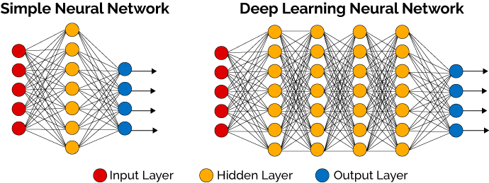

Deep Learning is a subfield of machine learning concerned with algorithms inspired by the structure and function of the brain called artificial neural networks.
If you are just starting out in the field of deep learning or you had some experience with neural networks some time ago, you may be confused. I know I was confused initially and so were many of my colleagues and friends who learned and used neural networks in the 1990s and early 2000s.
The leaders and experts in the field have ideas of what deep learning is and these specific and nuanced perspectives shed a lot of light on what deep learning is all about.
In this post, you will discover exactly what deep learning is by hearing from a range of experts and leaders in the field.
Let’s dive in.